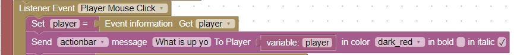
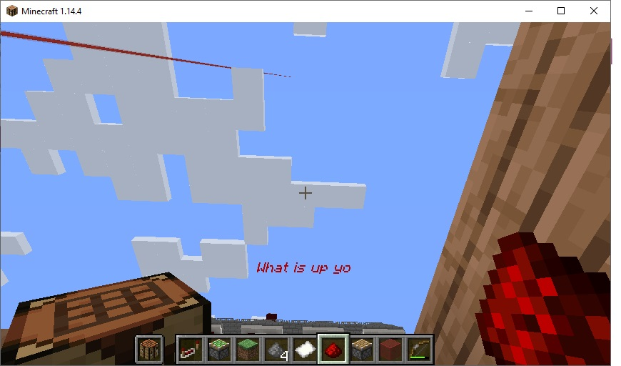

Title Bar
Sometimes it is useful to give the player hints about what they should do or notify them of game effects
The server command: "title" is useful for this purpose
This code will create a title bar

It will look like this:

You can change the bold, italic, color, message and type of message